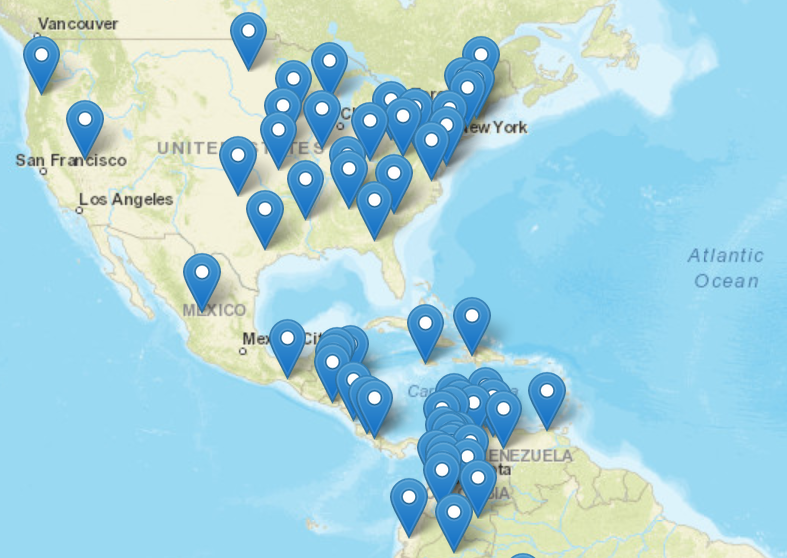

You can actually visit Berlin, Paris, Rome, Moscow, and London, all without ever travelling to Europe, or even leaving the United States. How is this possible, you might ask?
Well, it turns that we do not actually have enough unique names for all of our cities across the globe.
Berlin is most well known as the capital of Germany, but there are actually a total of 71 places named Berlin worldwide?

Most places that share a name with the capital of another country are home to only a few hundred to a couple thousand people, but some have larger populations.
Berlin, Connecticut and Berlín, El Salvador are home to around 20,000 people each.
Moscow, Idaho is home to roughly 25,000 people and is the location of the state's primary university, the University of Idaho.